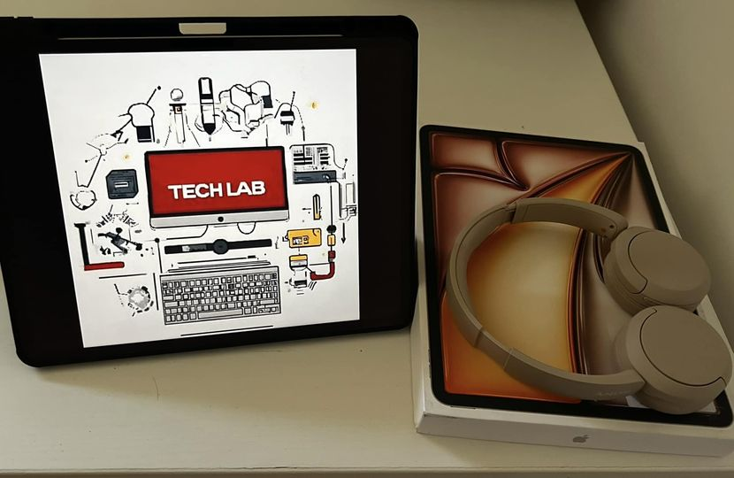

IPAD AIR 2024 M2
📱 **Un mese fa ho deciso di acquistare un iPad Air 2024 con chip M2. **
Dopo un mese di utilizzo la domanda che imagino possiate farci é:
Ne vale davvero la pena? 🤔
**Pro:** ✨ *Potenza turbo*: Il chip M2 rende tutto incredibilmente fluido, dai giochi alle app di produttività! Inoltre é possibile utilizzare due app in contemporanea sulla medesima schermata , il che risulta veramente comodissimo. 🚀 🖥 *Display che incanta*: Il Liquid Retina è un piacere per gli occhi, con colori vividi e dettagli super definiti. Ideale per i creativi e per chi ama godersi film e serie TV. 🎨🍿 🔋 *Autonomia da maratona*: La batteria dura ore e ore, perfetta per chi lavora (o si diverte) in mobilità senza preoccupazioni. 🔋🏃♂️ 💸* Qualitá prezzo ottima* : Attualmente si aggira attorno ai 600 euro che per tutta questa potenza mixata ad una versalilitá a 360 gradi risulta perfetto anche per ambiti professionali. **Contro:** ⚡️ *USB-C ancora limitata*: Sebbene ci sia la porta USB-C, manca ancora il supporto completo a tutte le periferiche. Qualche adattatore in più da comprare… 🤷♀️ 🔊 *Speaker migliorabili*: Nonostante la qualità audio sia buona, gli speaker non sono all’altezza di quelli del fratello maggiore, l’iPad Pro. 🎧 Che ne pensi? Sei pronto a fare il salto con il nuovo iPad Air o aspetterai il prossimo modello? Facci sapere ! 💬👇Ecco un esempio di un link: Visita questo sito.
Puoi anche aggiungere un'immagine:
